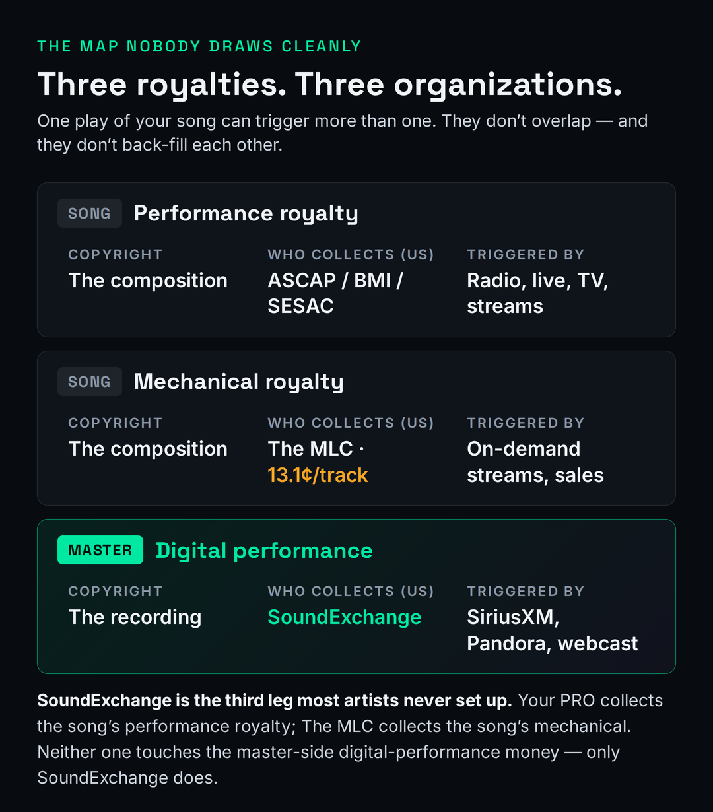

SoundExchange is the single U.S. organization that collects one specific royalty: the digital-performance royalty on your master recordings when they play on non-interactive services like SiriusXM, Pandora’s radio mode, iHeartRadio, and internet/webcast radio. It is free to register and takes about fifteen minutes. Here is the part almost nobody tells you: if you own your masters, you are owed two shares — the 45% featured-artist share and the 50% sound-recording-owner share — and most independent artists register for only one, quietly forfeiting roughly half their money. Your distributor does not collect this for you, and neither does your PRO. This page is about what that money is, whether you’re owed it, and exactly how to claim all of it.
This is education, not legal or financial advice — royalty registration touches your taxes and your rights, so a real catalog is worth running past a music attorney or a qualified administrator. Every figure below is sourced and dated to SoundExchange’s own filings or current industry reporting as of June 2026; statutory rates and annual payouts change, so re-check the live source before you rely on a number.
The Royalty Your Distributor and Your PRO Both Ignore
If you have done the responsible-artist things — put your music on Spotify through DistroKid or CD Baby, signed up with ASCAP or BMI — it is reasonable to assume you have your royalties covered. You do not. Those two moves collect two of the three royalty streams a recorded song generates, and they deliberately leave the third one untouched. That third stream is the one SoundExchange exists to collect, and it is the one most independent artists never set up, because nothing in the distributor or PRO sign-up flow ever mentions it.
The cleanest way to see the gap is to stop thinking about “royalties” as one thing and start seeing the three separate rights that ride on every release. There are two copyrights in any recorded song: the composition (the song someone wrote — the melody, chords, and lyrics) and the master (the specific recording of it). Different rights generate royalties off each, collected by different organizations, triggered by different uses. They do not overlap, and crucially, they do not back-fill one another — collecting one has no effect on whether the others get collected.

Your PRO (ASCAP, BMI, or SESAC) collects the performance royalty on the composition — money owed to the songwriter and publisher when the song is publicly performed on radio, TV, in venues, or streamed. The MLC collects the mechanical royalty on the composition — money owed for reproductions, including on-demand streams and downloads, at a statutory rate of 13.1¢ per track for 2026 under the Phonorecords IV proceeding (up from 12.7¢ in 2025, per Copyright Royalty Board schedules reported by Royalty Exchange). Both of those are songwriter-side. Neither one touches the recording.
SoundExchange collects the one stream nobody else does: the digital-performance royalty on the master — money owed to the people who own and perform on the actual recording when it plays on non-interactive digital radio. That is a completely different copyright from the one your PRO and The MLC are paid on, which is exactly why being registered with ASCAP or BMI does nothing to put SoundExchange money in your account. If your recordings have spun on SiriusXM or Pandora and you have never registered, that royalty has been accruing in your name and going uncollected. For the full picture of how all of these fit together, our overview of how music royalties work walks the whole map; this page is the deep dive on the leg that gets skipped.
What SoundExchange Actually Collects
SoundExchange is the sole organization designated by the U.S. government to administer the Section 114 sound-recording license — the statutory license (17 U.S.C. §§112 and 114) that lets certain digital services stream recordings while paying a fixed, government-set rate for each play. The rates are set by the Copyright Royalty Board, a three-judge panel, not negotiated track by track. SoundExchange describes itself as having distributed more than $13 billion in digital-performance royalties to date on behalf of more than 800,000 music creators (SoundExchange, June 2026), distributing roughly $1 billion a year — a reported $1.05 billion for full-year 2024, up 4.9% over 2023 (SoundExchange, February 2025). That is the scale of the money flowing through the stream your distributor never mentions.
The defining word is non-interactive. A non-interactive service is one where the listener does not choose the specific track — they pick a station, a channel, or a genre, and the platform decides what plays next. That is what SoundExchange covers: SiriusXM (satellite radio), Pandora’s radio mode, iHeartRadio, internet and webcast radio, and digital-cable music services like Music Choice. SoundExchange reports that more than 3,000 such services pay it. If a station or an algorithm chose the song for the listener, the play almost certainly runs through SoundExchange.
It helps to know where this royalty even came from, because the history explains the boundaries. The digital sound-recording performance right was created relatively recently — it did not exist before the mid-1990s, and the modern webcasting framework grew out of the Digital Millennium Copyright Act of 1998, which gave services like Pandora an automatic statutory license to stream recordings as long as they paid the set rate. SoundExchange was spun out as an independent non-profit in 2003 to administer exactly that money. More recently, the Music Modernization Act extended federal protection to pre-1972 recordings and designated SoundExchange to administer their digital royalties too — so if you (or an estate you represent) performed on classic recordings now spinning on a SiriusXM decades channel, those plays are inside the system as well. This is a young, expanding right, not an old settled one, which is part of why so many artists have never been told it applies to them.
Just as important is what it does not cover, because the boundaries are where most of the confusion lives. SoundExchange does not pay for on-demand (interactive) streaming — Spotify, Apple Music, YouTube, Tidal, where you pick the exact song. Those are licensed differently and paid to you through your distributor (for the master) and through The MLC and your PRO (for the composition); see streaming royalties explained for that side. It does not collect the composition royalties at all — that is the PRO and MLC lane, and the distinction between SoundExchange and the PROs is worth getting straight in ASCAP vs BMI. And it does not pay you for ordinary terrestrial AM/FM radio — a U.S.-specific gap we’ll come back to, because it surprises people who assume radio play means a recording check.
The 45 / 50 / 5 Split — and the 45%-vs-95% Mistake
Here is the part that costs independent artists real money, and the single most important thing on this page. Every dollar SoundExchange collects on a recording is divided by law into three fixed shares, and how you register determines how many of them you actually receive.

The 45% featured-artist share goes directly to the artist prominently featured on the track, and it is paid by SoundExchange straight to that artist even if a label owns the master. This share is, in industry shorthand, sacrosanct — a label cannot intercept it, which is precisely why SoundExchange tells artists to register directly rather than assuming a label or distributor handles it. The 50% sound-recording-copyright-owner (SRCO) share goes to whoever owns the master: a label in the traditional setup, or you, if you self-released and own your recordings. The remaining 5% goes to non-featured performers — session musicians and backing vocalists — and is paid not by SoundExchange directly but through the AFM & SAG-AFTRA Intellectual Property Rights Distribution Fund.
There is one more reason the 45% featured share matters out of proportion to its size: it is the part the law protects from your own deals. The reason SoundExchange insists on paying featured artists directly is that this share is meant to reach the performer no matter what the recording contract says. If you signed an old or ungenerous deal that handed your masters to a label, the 50% owner share goes to that label — but the 45% featured share still lands in your account, untouched, because a label cannot contract it away from you through SoundExchange. For an artist who gave up master ownership years ago, that 45% can be the only meaningful recording income they still control, which is exactly why “register directly, even if you’re signed” is repeated so often. Collaborations follow the same logic: when two artists are both featured on a track, SoundExchange treats it as a 50/50 split of the featured share unless the collaborators direct otherwise, so getting your featured-artist claim and your splits on file is how you make sure a co-feature isn’t quietly collecting your half.
Now the trap. If you are an independent artist who wrote, recorded, and released your own music, you are both the featured artist and the sound-recording copyright owner. You are owed the 45% and the 50% — 95% of the royalty on your own track. But SoundExchange’s registration asks you to sign up as an artist, a rights owner, or both, and the overwhelmingly common mistake is to register as only the performer. Do that, and you collect the 45% featured share and forfeit the entire 50% owner share — quietly, indefinitely, with no error message. You leave roughly half your SoundExchange money on the table for a recording you own outright.
Registering only as a “featured artist” when you own your masters. It feels complete — you got paid, after all — but you’re collecting ~45% of what you’re owed. Adding the sound-recording-owner role to the same free account unlocks the other 50%. If you registered years ago, log in and check which roles your account actually holds before assuming you’re covered.
If you are signed to a label, the math is different but the registration is still worth doing: you give up the 50% owner share to whoever owns the master, but the 45% featured share is yours by law and the label cannot take it — so registering directly is the only way to be sure you receive the part that is unambiguously yours. Either way, the lesson is the same: register for every role that applies to you, because each unregistered role is money you are entitled to and not receiving.
Does This Apply to You? A 30-Second Test
Not every artist has SoundExchange money waiting today, and it is worth being honest about that rather than implying everyone is owed a windfall. The royalty only accrues when your recordings actually play on the covered non-interactive services. But the bar is lower than most people think — you do not need to be charting on Spotify, you need spins on digital radio — and the cost of checking is zero. Here is the quick decision path.
![Decision-card flowchart titled are you owed SoundExchange money. Question one: has your music played on SiriusXM, Pandora, iHeart, or internet radio? Question two: do you own any of your master recordings? Question three: are you registered as both artist and rights owner? Each gate routes to an outcome such as register as an artist for the 45 percent share, add the rights-owner role for the other 50 percent, or search the unclaimed-royalties database. A producer note explains the Letter of Direction path. Footer reads a decision framework, not legal advice.](../images/are-you-owed-soundexchange-royalties.png)
Start with the trigger: has your music played on SiriusXM, Pandora, iHeartRadio, or any internet-radio station? If you have any meaningful release history on digital platforms, the answer is more often “probably yes, and you didn’t know” than people expect — algorithmic and curated radio surfaces independent tracks constantly. If the answer is genuinely no — brand-new artist, nothing out yet — register anyway, so the account exists and is matching plays the moment they start. Setup-in-advance is the cheapest move in this entire article.
Next: do you own any of your masters? If a label owns them, you are still owed the 45% featured share — register as an artist. If you own them, you are owed the 45% and the 50%, and you need both roles. Finally: are you registered for both roles already? If you are not sure, that uncertainty is itself the answer — log in and look, because the most common silent leak is an old account that only ever held the artist role. And if you are the producer or mixer rather than the artist, there is a separate path through a Letter of Direction, which we cover below. The whole test is a couple of minutes against a stream that pays out roughly a billion dollars a year.
Why This Is Money You’re Currently Collecting $0 Of
There is a tempting but wrong way to sell SoundExchange, and it is worth correcting because the honest version is actually more persuasive. You will sometimes read that a digital-radio spin “pays far more per play than a Spotify stream.” When you check the statutory rates, that is not really true for webcasting. For 2026, the Copyright Royalty Board’s non-interactive webcasting rate runs about $0.0025 per performance for non-subscription listeners and around $0.0032 for subscription streams (per CRB rate schedules reported by Royalty Exchange; CreateBase cites Pandora at roughly $0.0026 per non-subscription stream). That is in the same ballpark as a Spotify per-stream payout of roughly $0.003–$0.005 — comparable, not ten times larger. SiriusXM is licensed differently, as a percentage of revenue rather than a flat per-play, so its effective per-spin varies, but the headline “digital radio pays way more per play” claim does not hold up for webcasting, and we are not going to pretend it does.
The real argument is better. The point is not that SoundExchange pays more per play — it is that SoundExchange is a separate, additional, stacking stream that most artists are collecting $0 of. You are already capturing close to 100% of your Spotify and Apple money because your distributor is wired up to do exactly that, automatically, from day one. You are capturing 0% of your SoundExchange money because nobody set up the account. A play on Pandora generates a recording royalty and the composition royalties — they do not compete, they add. The question is not “which pays more per play,” it is “why am I collecting one of the two checks a single play generates and ignoring the other.”
A concrete way to feel it: imagine one of your tracks plays once on Pandora’s radio mode for a subscription listener. That single play generates a recording royalty (collected by SoundExchange and split 45/50/5) and a composition performance royalty (collected by your PRO) and, on the mechanical side, money administered by The MLC — multiple separate micro-payments off one spin, owed to different parties through different organizations. If you’re registered everywhere, you collect your slice of each. If you only ever set up your distributor and your PRO, the SoundExchange slice of that play — and every play like it — never reaches you. It is not a rounding error you can shrug off at scale; it is a whole revenue line you are simply not plugged into.
For catalogs with real non-interactive presence — an album that lives on a SiriusXM channel, a track that internet-radio stations and Pandora keep in rotation — the cumulative SoundExchange check can be substantial and entirely separate from anything showing up in your distributor dashboard. SoundExchange reports paying most royalties monthly, with more than 90% distributed within 45 days of receipt, and pays out once an account accrues a low threshold (direct deposit monthly at $100 or more, quarterly at $10 or more). The money is real, it is recurring, and right now — if you never registered — you are receiving none of it. For the broader context of how thin per-stream economics shape an independent artist’s income, our breakdown of how much Spotify pays per stream sets the baseline this stacks on top of, and how to make money from music puts it in the full revenue picture.
How to Register and Claim Back-Royalties
Registration is free, done once, and takes roughly fifteen to twenty minutes. You create an account at SoundExchange’s registration site, choose the roles that apply — artist, rights owner, or both (this is the step where the 95% decision lives) — and provide identity and tax details (a W-9 for U.S. registrants, or a W-8BEN for non-U.S. registrants, which affects withholding) plus banking information for payment. The interface feels official because royalties are taxable income and SoundExchange is independently audited; that formality is normal, not a red flag.
The step people skip is the catalog. After registering, you submit a list of your recordings, and the single most important field is the ISRC — the International Standard Recording Code that uniquely identifies each track. SoundExchange uses ISRCs to match incoming plays reported by Pandora and SiriusXM to your account. If your ISRCs are missing, wrong, or do not match the ones your distributor assigned, the plays come in as unmatched and the money sits unattributed. Keeping a clean master list of every ISRC, master owner, and exact artist-name spelling is the difference between getting paid and watching your royalties pool in an unmatched bucket; our guide to music metadata covers why these identifiers matter across your whole release stack.
Crucially, registration is not only forward-looking. SoundExchange maintains a publicly searchable unclaimed-royalties database: money already collected on recordings whose owners have not registered or not fully claimed. You can search it for your own recordings even before you finish setting up, and if there is money waiting, you submit a claim with supporting documentation. Industry reporting consistently describes hundreds of millions of dollars sitting unclaimed at any given time, and industry guides note that unmatched royalties can eventually be redistributed to other rights-holders by market share — which, in practice, favors the major labels. In other words, money with your name on it does not wait forever; left unclaimed long enough, it can quietly become someone else’s. Registering and claiming is how you stop that clock.
One thing registration is emphatically not: a distributor add-on you can assume is handled. DistroKid does not register you with SoundExchange — you sign up yourself and keep 100% of what SoundExchange pays, with no cut to a distributor (per DistroKid coverage and SoundGuys, 2024–2026). TuneCore does not register you either and says so directly on its own help pages. CD Baby offers an opt-in service (CDB Boost) that collects only the 50% rights-owner share for a 9% cut, U.S. only (CD Baby, October 2025) — and notably, even distributors that do offer SoundExchange collection typically register you as the rights owner, not the featured artist, so the 45% featured share still has to be claimed by you directly. The takeaway: whatever your distributor does or doesn’t do, the only way to be certain you are collecting both shares is to register yourself at the source. If you’re still setting up your release pipeline, our guides to registering your music and distributing music place this step in the right order.
Producers, Session Players, and Letters of Direction
SoundExchange has a quietly important feature for the people who build records but aren’t the named artist: producers, mixers, and engineers can be paid a share of the featured-artist royalties — but only through a specific mechanism, and only under a specific condition. The mechanism is a Letter of Direction (LOD): a document the featured artist signs instructing SoundExchange to redirect a percentage of their 45% share to a named creative participant. SoundExchange runs a formal LOD program for exactly this purpose.
The condition is the catch, and it is the one place a producer’s money is gated entirely behind someone else’s paperwork: the featured artist must be registered with SoundExchange first. SoundExchange cannot pay a producer — even one holding a fully signed LOD — if the artist whose royalties are being redirected has not signed up. No artist registration means no pool to redirect from, which means no producer payment, regardless of how airtight your agreement is. In practice this means a producer’s SoundExchange income depends on persistently getting the artists they worked with to register, then getting the LOD on file. It is worth noting too that LODs are generally not retroactive unless the document specifically says so, so the timing of when you file matters.
The clean way to handle this is to fold the LOD into your producer paperwork from the start — treat it the way you’d treat any split, agreed in writing before the record comes out rather than chased afterward. If you produce on points, the SoundExchange share usually tracks your producer points, and our explainer on producer points and the mechanics of a split sheet show how to document who gets what before there’s money on the table to argue over. Session musicians and backing vocalists sit in a different bucket entirely: as non-featured performers, their 5% share flows through the AFM & SAG-AFTRA fund rather than through direct SoundExchange registration, so that is where a session player goes looking, not the main SoundExchange portal.
Avoid the Monthly-Fee “Royalty Recovery” Trap
Because most artists have never heard of SoundExchange and because there is genuinely unclaimed money sitting in the system, a small industry has grown up around charging people to collect royalties they could collect for free. You will see services offering to “recover your unclaimed royalties” or “manage your SoundExchange registration” in exchange for a monthly fee or a cut of the take. The honest position, and the one SoundExchange itself reinforces, is simple: registering with SoundExchange is free, and the organization operates at one of the lowest administrative rates of any comparable collective — its own FAQ puts that fee in the 4–6% range.
That does not mean every paid service is a scam — a legitimate administrator who handles a large or complicated catalog, manages international collection, or saves a busy artist real time can be worth a transparent commission. The line to watch is between a service that does meaningful work you genuinely can’t or won’t do yourself and one that simply charges you a recurring fee to fill in a free registration form on your behalf. SoundExchange’s own “myths” messaging exists precisely because artists report being told the money is “too good to be true” or that there are hidden strings — there aren’t; the direct path is free and the form is something an independent artist can complete in an afternoon.
This is the same honest-broker stance we take everywhere on this site: we would rather route you to the free direct path and lose a hypothetical referral than watch you pay a monthly fee for something you could do once, yourself, for nothing. Before you hand a percentage of your royalties to anyone, register directly, search the unclaimed database yourself, and see how much is actually there. If it turns out your catalog is large and international enough that professional administration earns its keep, that is a real decision you can make from a position of knowledge — not one you should be scared into by a pitch that overstates how hard the free path is.
The International Gap SoundExchange Doesn’t Cover by Default
SoundExchange collects U.S. digital-performance royalties. If your recordings get airplay or public performance abroad, that money — broadly called neighboring rights — is collected by other countries’ organizations, not by your basic SoundExchange registration. The major ones independent artists encounter are PPL in the United Kingdom, GVL in Germany, and SENA in the Netherlands, with equivalents across most of the world. The U.S., notably, is an outlier in how narrow its own neighboring-rights regime is, which is part of why this gets confusing.
There is an important nuance worth getting exactly right, because it’s where a lot of guides oversimplify. Your default SoundExchange registration covers U.S. collection only — but SoundExchange also offers a separate membership tier that lets you grant it a mandate to pursue your international royalties on your behalf through its partner network (SoundExchange reports working with roughly 60 international partners covering about 87% of the available neighboring-rights market, collecting for more than 474,000 creators overseas, per its February 2025 figures). So the precise statement is: SoundExchange does not automatically collect your international money when you simply register, but it can if you opt into membership — or you can register directly with the foreign societies (PPL, GVL, SENA, and the rest) yourself, or use a neighboring-rights administrator who handles the dozens of territories for a commission, typically in the 10–20% range.
For most independent artists the practical answer is that registering with every foreign society individually is more administrative load than it’s worth, so either the SoundExchange international mandate or a single neighboring-rights administrator is the sane route — but the first step is simply knowing the international stream exists and is separate, so you don’t assume your U.S. SoundExchange account is sweeping up your overseas radio play. It isn’t, unless you’ve specifically arranged for it to.
What SoundExchange Is NOT
Because so much of the confusion is people conflating SoundExchange with something they already use, it helps to mark the boundaries explicitly. SoundExchange is not a PRO — it does not collect the songwriter’s performance royalty the way ASCAP, BMI, or SESAC do; those pay on the composition, SoundExchange pays on the recording. It is not The MLC — it does not collect mechanical royalties on the composition. It is not your distributor — it does not get your music onto Spotify and does not collect your on-demand streaming money. And it is not for interactive streams — nothing you earn on Spotify, Apple Music, YouTube, or Tidal comes through SoundExchange, because those let the listener choose the track.
The most consequential boundary is the one that surprises people the most: SoundExchange does not pay you for ordinary AM/FM terrestrial radio. In the United States — uniquely among major music markets — there is no general performance right in the sound recording for over-the-air broadcast radio. When a song plays on your local FM station, the songwriter gets paid through their PRO, but the featured artist and master owner get nothing. This is the long-debated “AM/FM loophole,” and SoundExchange is openly campaigning to close it through the proposed American Music Fairness Act; until and unless that becomes law, terrestrial-radio airplay generates no recording royalty for you, and no SoundExchange registration will conjure one. Marking that edge is part of being honest about what this royalty is — it is digital-performance money, not a payment for every time your song touches a radio of any kind.
Put all of it together and the role of SoundExchange snaps into focus. It is one specific, free-to-claim royalty on your masters, triggered by non-interactive digital radio, split 45/50/5, separate from and additive to everything your distributor and PRO already collect — and the most common way to lose money on it is simply not knowing it exists, or registering for half of what you’re owed. For the wider context of building a release that captures every stream it generates, our overviews of music distribution, music publishing, and copyrighting your music round out the system this fits inside. This is education, not legal or financial advice — verify current rates and rules at the source and, for a serious catalog, get a professional’s eyes on it.
Put It Into Practice: 3 Exercises
- List every release you have out. For each one, answer the first gate: has it plausibly played on SiriusXM, Pandora’s radio mode, iHeartRadio, or any internet/webcast station? Editorial or algorithmic radio placements, not just on-demand streams, are what count here.
- For each “yes,” answer the second gate: do you own any of the master recording — fully, or a co-owned share? Self-released and unsigned almost always means yes; a label deal means check your contract.
- Write down which of your tracks clear both gates. That list is the money you are currently owed and, if you have never registered, almost certainly not collecting. Keep it — it is your registration to-do list.
- Open a free SoundExchange account (or your existing one) and find where it asks whether you are registering as a featured artist, a rights owner, or both. Note which role(s) you are currently set up under.
- For one track you own outright, confirm you are claiming both the 45% featured-artist share and the 50% sound-recording-owner share. If you are only set up as one, you are forfeiting roughly half — write down exactly which half.
- Pull the ISRC for that track from your distributor’s dashboard and confirm it matches what SoundExchange has on file. The ISRC is the key that matches a play to your account; a mismatch is how money ends up in the unclaimed database. Then check that database for your own name.
- Take one track that gets meaningful non-interactive radio play. Estimate, separately, what it earns you on the composition side (your PRO) and what it would earn on the master side (SoundExchange) — treat them as two checks that stack, not one.
- If you own masters and have collaborators or session players, sketch who is owed which slice: the 45% featured share, the 50% owner share, and the 5% non-featured pool — and which of them needs a Letter of Direction to be paid through your account.
- Finally, estimate your unclaimed back-royalties: how many years of qualifying radio play happened before you would have registered? That figure is the one-time catch-up sitting in the unclaimed-royalties database — and the argument for registering today rather than next year.
Frequently Asked Questions
Yes. Registering with SoundExchange is free, and the organization keeps an administrative fee in the 4–6% range — among the lowest of any comparable collective (SoundExchange, 2026). If a service asks you for a monthly fee or a cut simply to register or to “recover” your royalties, you are paying for something you can do yourself for nothing. Register directly at SoundExchange before handing anyone a percentage.
No. DistroKid does not register you with SoundExchange — you sign up yourself and keep 100% of what SoundExchange pays, with no distributor cut. TuneCore also does not register you. CD Baby offers an opt-in service (CDB Boost) that collects only the 50% rights-owner share for a 9% cut, U.S. only. Even where a distributor does offer collection, it typically registers you as the rights owner, not the featured artist — so the 45% featured share still has to be claimed directly. Verify each policy on the vendor’s current page.
SoundExchange does not pay for Spotify or other on-demand (interactive) streams — that money reaches you through your distributor. SoundExchange covers non-interactive digital radio: SiriusXM, Pandora’s radio mode, iHeartRadio, and internet/webcast radio. If your music has played on any of those — which happens to independent artists more often than they realize — you have a separate royalty waiting that Spotify earnings have nothing to do with. If you have genuinely never had non-interactive play, register anyway so the account is ready when you do.
Often, yes. SoundExchange maintains a publicly searchable unclaimed-royalties database, and you can search it for your recordings even before you finish registering. If money has been collected in your name, you submit a claim with supporting documentation (proof of performance, identity, and ISRCs). Industry reporting describes hundreds of millions of dollars unclaimed at any time, and unmatched royalties can eventually be redistributed to other rights-holders — so the sooner you register and claim, the more you can recover.
They collect different royalties on different copyrights. ASCAP, BMI, and SESAC are PROs that collect the performance royalty on the composition — money for the songwriter and publisher. SoundExchange collects the digital-performance royalty on the master recording — money for the featured artist and the recording’s owner, and only on non-interactive digital services. They do not overlap, and being registered with one does nothing to collect the other. A songwriter who also records and owns masters needs both a PRO and SoundExchange.
Indirectly, and only with paperwork. Producers, mixers, and engineers can receive a share of the featured artist’s 45% — but only through a Letter of Direction (LOD) the artist signs, and only after that artist is registered with SoundExchange. No artist registration means no pool to redirect from, so the producer cannot be paid even with a signed LOD. LODs are also generally not retroactive unless the document says so. Fold the LOD into your producer agreement up front rather than chasing it later.
It’s how the law divides every SoundExchange royalty: 45% to the featured artist (paid directly, even if a label owns the master), 50% to the sound-recording copyright owner (the label, or you if you own your masters), and 5% to non-featured performers via the AFM & SAG-AFTRA fund. The split is set by the Copyright Royalty Board. If you own your masters, you’re owed the 45% and the 50% — 95% — but only if you register as both an artist and a rights owner. Registering as one role forfeits the other share.
No. In the U.S. there is no general performance right in the sound recording for terrestrial AM/FM broadcast, so when your song plays on over-the-air radio the songwriter gets paid through their PRO but the featured artist and master owner do not. SoundExchange covers digital non-interactive radio (SiriusXM, Pandora, webcast), not terrestrial. SoundExchange is campaigning to change this through the proposed American Music Fairness Act, but until that becomes law, FM/AM airplay generates no recording royalty for you.
This page is education, not legal or financial advice. SoundExchange registration is free and the direct path is genuinely doable yourself; if you own your masters, register as both an artist and a rights owner so you collect 95%, not 45%. Verify every current rate and rule at the source, and for a large or international catalog, get a music attorney or qualified administrator involved.